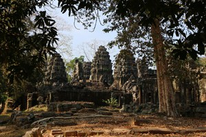

Banteay Kdei Temple
Angkor Wat temple is the reason why millions of tourists descend on Siem Reap each year. This UNESCO World Heritage site was built in the early 12th century and is still the world’s largest religious monument ever built. Although originally built as a Hindu temple and unusually dedicated to Vishnu, it gradually transformed into a Buddhist site. It was used as the state temple for King Suryavarman II and became his final resting place. The temple was designed to represent the mythical home of the Hindu Gods – Mount Meru. Angkor Wat has become the national symbol of Cambodia. It is featured on the national flag, many businesses feature the name “Angkor” and there is even a beer named in its honour.